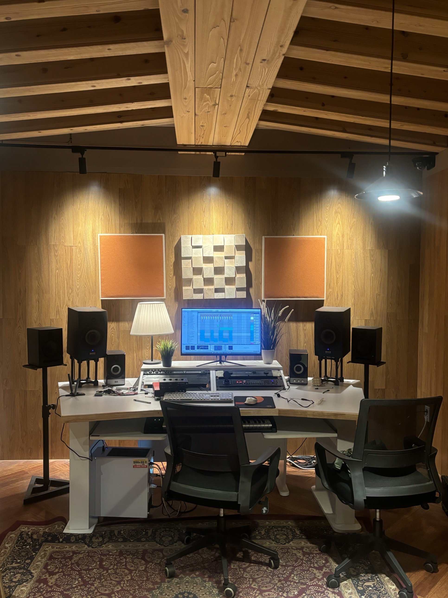
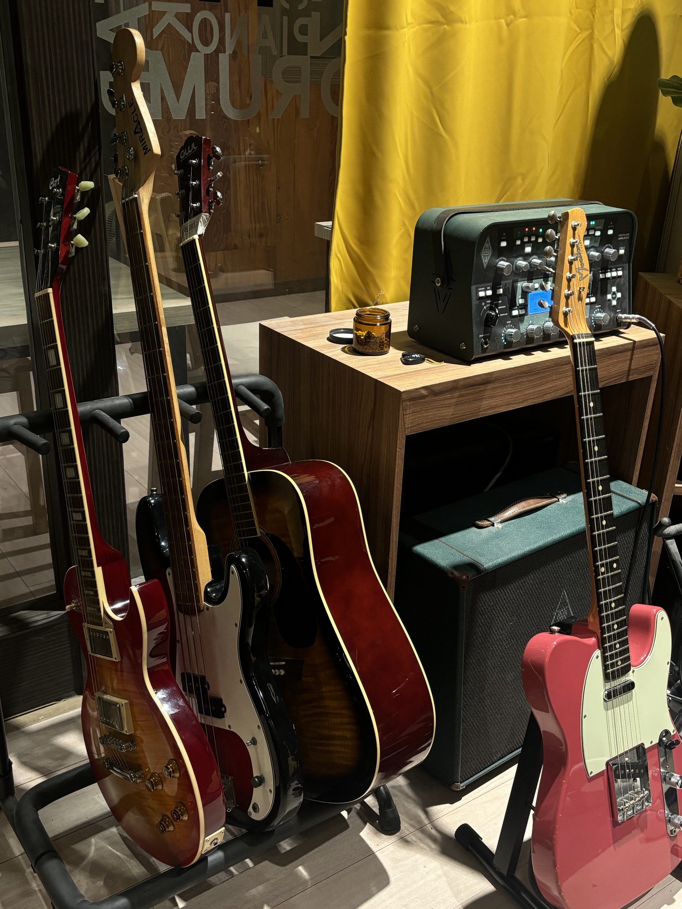
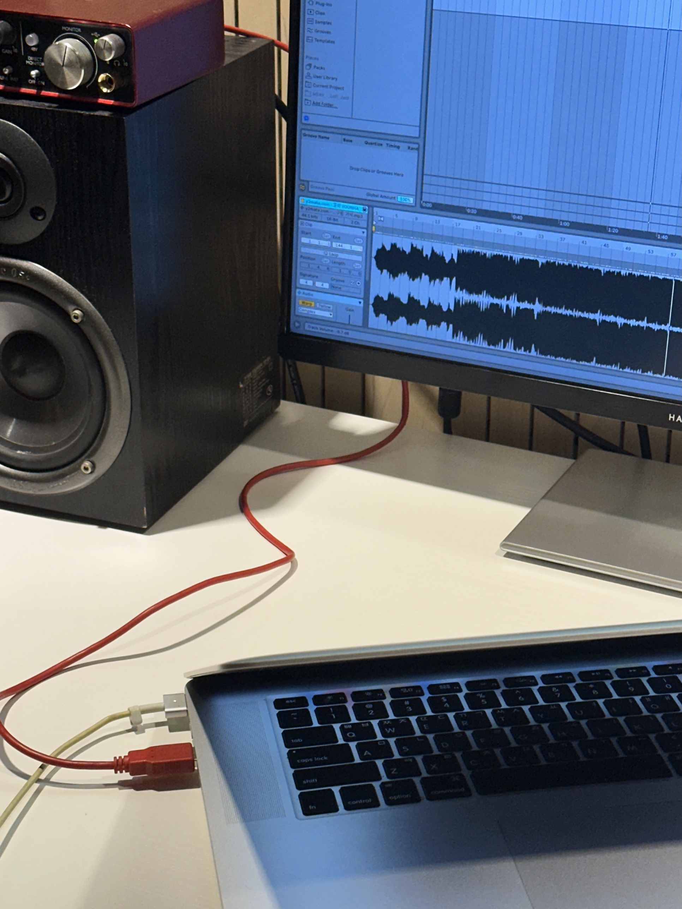

ENOCH MUSIC ACADEMY01 / 08
ADMISSION 2027
2027 정시 실용음악과,
10개 대학 일정 정리

ENOCH MUSIC ACADEMY02 / 08
DEADLINE 01.07
1월 7일에
끝나는 학교, 다섯 곳

ENOCH MUSIC ACADEMY03 / 08
DEADLINE 01.20
1월 20일까지
접수하는 학교, 다섯 곳

ENOCH MUSIC ACADEMY04 / 08
SELECTION
수능을 보는 학교,
안 보는 학교

ENOCH MUSIC ACADEMY05 / 08

ENOCH MUSIC ACADEMY06 / 08

ENOCH MUSIC ACADEMY07 / 08

ENOCH MUSIC ACADEMY08 / 08
시험장에서도
연습한 만큼
에녹실용음악학원 시흥점 · 경기도 시흥시 은행로 157 2층 · 031 315 3666